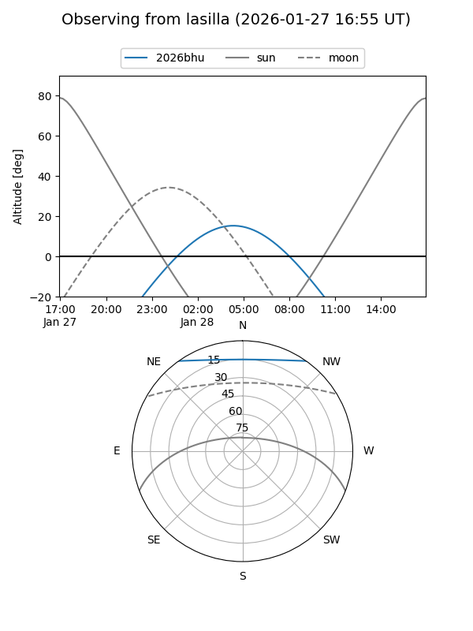
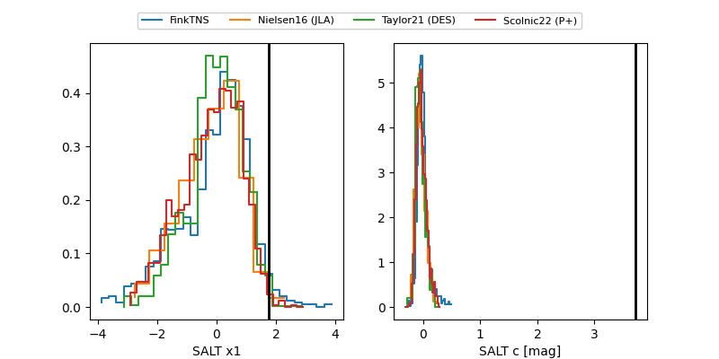

2026bhu
Target 2026bhu at 2026-01-28 07:01
Aliases and brokers:
FINK: link
Lasair: link
ALeRCE: link
TNS: link
YSE: link
alt names
ZTF26aabqhut (ztf,fink_ztf)
2026bhu (tns,yse)
Coordinates:
equatorial (ra, dec) = 121.1478,+45.51698
equatorial (HMS+DMS) = 08:04:35.48,+45:31:01.15
galactic (l, b) = (174.1430,+31.40035)
Flags:
Photometry:
last ztfg=19.46
4 ztfg detections
Lightcurve

Visibility


Additional plots
